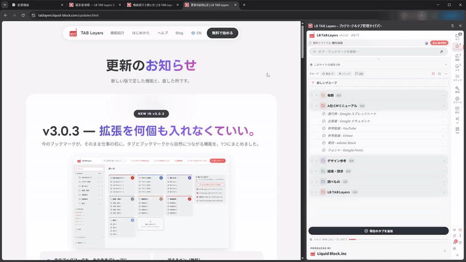

Chromeの拡張機能を削除すると、その拡張が自分の中に保存していたデータ（設定や保存リストなど）は一緒に消えます。一方、Chromeのブックマークとして保存されたものはChrome本体のデータなので、拡張を消しても残ります。タブ管理の拡張を消す前は、その拡張のエクスポート機能でデータを書き出しておきましょう。いったん止めたいだけなら、削除ではなく「オフ（無効）」にすればデータは残ります。
「この拡張、もう使っていないから消そう」。その前に、中に何が入っているかを確かめたことはありますか。タブ管理やブックマーク系の拡張には、何か月分もの作業の記録が入っていることがあります。
保存先は大きく3タイプ
| 保存先 | 拡張を削除すると | 別のPCで使うには |
|---|---|---|
| 拡張機能の中 | 一緒に消える | エクスポート → インポート |
| サービスのクラウド（アカウント） | 拡張からは消えるが、アカウント側に残ることが多い | 同じアカウントでログイン |
| Chromeのブックマーク | 残る（Chrome本体のデータ） | Chromeの同期（Googleアカウント） |
「タブを保存しておける拡張」でも、どこに保存しているかで削除したときの結果がまったく違います。拡張の説明ページやヘルプで、保存先を確認しておきましょう。
「削除」と「オフ（無効）」の違い
chrome://extensions では、拡張機能ごとに「オフにする」と「削除」を選べます。
- オフ（無効） — 拡張は動かなくなるが、データは残る。オンに戻せば元どおり
- 削除 — 拡張と、拡張の中のデータが消える。入れ直しても戻らない
Chromeが重いので一時的に止めたい、どの拡張が原因か切り分けたい、というときは、まず「オフ」で十分です（→ 拡張機能を減らしてChromeを軽くする）。
削除する前のチェックリスト
- 保存先を確認する — 拡張の中か、クラウドか、ブックマークか
- エクスポートする — 設定画面に「エクスポート」「バックアップ」があれば書き出しておく
- ブックマークもバックアップする — ブックマークマネージャー（Ctrl+Shift+O）の︙ →「ブックマークをエクスポート」
- まず「オフ」で数日過ごす — 困らなければ削除する
LB TAB Layers の場合
LB TAB Layers のグループと保存したタブは、Chromeのブックマーク内の「LB TAB Layers」フォルダに保存されています。拡張を削除しても、ブックマークとして残ります。入れ直したときは、残っている「LB TAB Layers」フォルダからグループを復元できます（→ ブックマーク同期のしくみ）。

| データ | 保存先 | 拡張を削除すると |
|---|---|---|
| グループ・サブグループ・保存したタブ | Chromeのブックマーク | 残る |
| アーカイブしたグループ | ブックマークの「📦 アーカイブ」フォルダ | 残る |
| メモ、グループの★ランク | 拡張の中 | 消える（JSONに書き出せる） |
| 設定・テーマ、ダッシュボードのタブの★とタグ、サムネイル | 拡張の中 | 消える |
メモや★ランクも残したい場合は、削除の前に設定の「データ管理」→「エクスポート (JSON)」で書き出しておきましょう（→ JSONバックアップ）。
⚠️ 反対に、ブックマーク側で「LB TAB Layers」フォルダを丸ごと削除すると、グループも消えます。ブックマークを整理するときは、このフォルダを消さないように注意してください。
消す前に、自分で保存先を確かめる方法
説明を読む前に、実物を見るのがいちばん確実です。次の2か所を開けば、その拡張のデータがどこにあるか、おおよそ分かります。
- ブックマークマネージャー（Ctrl+Shift+O）を開く — その拡張の名前のフォルダがあれば、保存先はChromeのブックマークです。拡張を消してもフォルダは残ります
- 拡張の設定画面を見る — 「エクスポート」「バックアップ」の項目があれば、データを拡張の中に持っている可能性が高いです。書き出せるものは書き出してから消します
どちらにも当てはまらず、ヘルプにも書かれていない場合は、「消えるもの」として扱うのが安全です。
データの種類ごとに考える
1つの拡張でも、保存先はデータごとに違います。「全部消える」「全部残る」ではなく、種類ごとに分けて確認します。
| データの種類 | よくある保存先 | 削除前にやること |
|---|---|---|
| 保存したページの一覧 | ブックマーク、または拡張の中 | どちらか確認し、拡張の中ならエクスポート |
| メモ・タスク | 拡張の中が多い | 書き出せる形式で保存 |
| 設定・テーマ | 拡張の中 | 作り直せるなら不要 |
| 閲覧の記録・サムネイル | 拡張の中 | 基本的に諦める（再生成されるもの） |
迷ったら「あとから作り直せないもの」を優先して書き出します。仕事のメモや、積み上げたタスクの記録は作り直せません。設定やテーマは、入れ直したあとでも数分で戻せます。
LB TAB Layers を消す前の具体的な手順
- ブックマークマネージャーで「LB TAB Layers」フォルダがあるか見る — グループと保存したタブは、この中にあります
- メモを残したいなら、JSONで書き出す — 設定の「データ管理」→「エクスポート (JSON)」。メモはこのパソコンの中にだけあり、拡張を消すと一緒に消えます
- ステップタスクの記録を残したいなら、アーカイブを書き出す — 完了してアーカイブしたタスクは、Markdown・CSV に書き出せます。ひな形も書き出せます
- 念のためブックマーク全体をエクスポートする — ブックマークマネージャーの︙ →「ブックマークをエクスポート」でHTMLに
- まず「オフ」にして数日使ってみる — 困らないと確認できてから削除します
入れ直したとき、何が戻るか
「LB TAB Layers」フォルダが残っていれば、入れ直したときに、その中のフォルダがグループとして戻ります。フォルダの名前と中の保存タブが手がかりです。フォルダの外にあったブックマークや、別の場所のフォルダは対象になりません。
- 戻る：「LB TAB Layers」フォルダ直下のフォルダ → グループ、その中のブックマーク → 保存したタブ
- 戻らない：メモ、★ランク、ダッシュボードのタブの★とタグ、サムネイル、設定・テーマ（JSONを書き出していれば、インポート (JSON) で取り込める）
- グループにならない：「📦 アーカイブ」「🗑 ゴミ箱」「📌 ピン留め」の特殊フォルダ（これらは復元のとき、普通のグループとして扱いません）
グループの数が無料版の上限（5グループ）を超えている場合は、その点も先に頭に入れておくと慌てません。
別のパソコンで使いたいとき
Chromeの同期をオンにしている場合は、ブックマークが別のパソコンにも出るので、そのパソコンで入れたLB TAB Layersにも、グループと保存したタブが並びます。メモなどはこのパソコンの中にあるので、同期では移りません。JSONで書き出して、別のパソコンで取り込みます。
| やりたいこと | 方法 |
|---|---|
| グループと保存タブを別のPCへ | Chromeの同期をオンにして、同じGoogleアカウントでログイン |
| メモなどを別のPCへ | JSONエクスポート → 別PCでインポート |
| 同期を使いたくない | ブックマークをHTMLにエクスポート → 別PCでインポート |
よくある失敗
- ブックマーク側で「LB TAB Layers」フォルダを消してしまう — 拡張を消すより、こちらのほうがグループを失う原因になります。ブックマークの大掃除のとき、名前が見慣れなくて消しがちです
- 「ブックマークに残る」＝「全部残る」と思う — 残るのはグループと保存したタブです。メモなどは別です
- 同期がオフのまま別のPCで探す — ブックマークが出てこないのは、拡張の問題ではなくChromeの同期設定のことが多いです
- Chromeのプロフィールを取り違える — ブックマークも拡張もプロフィールごとに分かれています。仕事用と個人用を使い分けている場合、消すプロフィールを確認しましょう
- 削除してから書き出そうとする — 削除後は拡張の画面が開けず、書き出せません。順番は「書き出す → 消す」です
まずやることリスト
- □ Ctrl+Shift+O で、拡張の名前のフォルダがあるか確認する
- □ 残したいメモ・タスクをJSONやMarkdown・CSVに書き出す
- □ ブックマーク全体をHTMLにエクスポートする
- □ まず「オフ」にして数日過ごす
- □ 問題なければ削除。「LB TAB Layers」フォルダは消さない
よくある質問
Q. Chromeの拡張機能を削除するとデータは消えますか？
拡張機能が自分の中に保存していたデータ（設定や保存リストなど）は一緒に消えます。Chromeのブックマークとして保存されたものはChrome本体のデータなので残ります。クラウドに保存するタイプは、アカウント側に残ることが多いです。
Q. 拡張機能を「オフ」にするのと「削除」の違いは？
オフ（無効）は拡張が動かなくなるだけで、データは残ります。オンに戻せば元どおりです。削除すると拡張の中のデータも消え、入れ直しても戻りません。
Q. LB TAB Layersを削除するとグループは消えますか？
グループと保存したタブはChromeのブックマークに保存されているので残ります。メモや★ランク、設定などは拡張の中に保存されているため消えます。残したい場合は、削除の前にJSONエクスポートで書き出してください。
Q. 拡張機能を削除したあと、入れ直せばグループは戻りますか？
「LB TAB Layers」フォルダがブックマークに残っていれば、入れ直したときにその中のフォルダがグループとして戻ります。メモや★ランク、設定は拡張の中にあったので戻りません。JSONで書き出してあれば、インポートで取り込めます。
Q. 別のパソコンにも同じグループを出したいときは？
Chromeの同期をオンにして同じGoogleアカウントでログインすると、ブックマークとして別のパソコンにも出ます。メモなどはこのパソコンの中にだけあるため、同期では移りません。JSONで書き出して取り込みます。
Q. 削除せずに、いったん止めておくことはできますか？
chrome://extensions で「オフ」にすれば、拡張は動かなくなりますが、データは残ります。オンに戻せば元どおりです。削除するかどうか迷うときは、まずオフで数日過ごすのがおすすめです。
▶ 実際の操作を動画で見る
サイドバーで、ブックマークとタブをいっしょに管理する様子です。